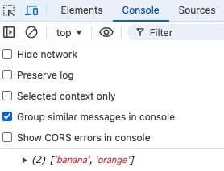

カリキュラム05
配列とは、複数のデータを一つにまとめて管理する箱のようなものです。
スクラッチでリストを作成したかと思いますが、そのリストが配列というものになります。
このスクラッチの例でいくと、「問題文」という配列の中に文章が3つ格納されているという意味になります。

JavaScriptでも配列を使って、その配列から文字やデータを取り出して何かを実行するということがよくあります。
タイピングゲームでは、配列の中に問題文を格納しておき、そこから1問ずつ取り出して問題文を表示するという処理がされています。
それでは、実際の書き方や使い方を学習していきましょう！
// script.js
const color = [
'赤',
'青',
'緑'
];
console.log(color);
配列の中身は何度も変わるものではないため、一般的には定数constに入れます。
colorは配列の名前になります。
配列を作るには、各カッコ[]を使用し、その中に情報を入れていきます。
配列の中には文字や数字を入れることが出来ます。
今回は色に関する配列を作成するため、配列の中には赤・青・緑という文字を入れています。
一つ一つの情報の後ろにコロン（,）を付けて情報を区切る必要があるので注意しましょう。
配列の最後の要素にはコロン（,）はあってもなくてもどちらでも大丈夫です。
これでcolorという配列の中に「赤・青・緑」という3つの情報を格納することが出来たので
index.htmlを開いて検証ツールで確認してみましょう。
console欄で見てみると、配列の中に3つの情報が入っていることを確認することが出来ます。
よく見てみると、0:"赤" 1:"青" 2:"緑"と表示されています。
これは、配列の中に入っている情報の順番を示しています。
プログラムは0から始まる仕組みになっているので、先頭にある赤は「0番目」の情報、次にある青は「1番目」の情報、
最後にある緑は「2番目」の情報という考え方になります。
そのため、配列では「〇〇番目の情報を取得して表示する」ということも可能です。
試しに、配列の1番目の情報（青）を取得してみましょう。
// script.js
const color = [
'赤',
'青',
'緑'
];
console.log(color[1]);
「配列の〇〇番目」という指定をする時には、各カッコ[]の中に取得したい情報の位置を記述します。
今回は青（配列の1番目の情報）を取得したいので、各カッコ[]の中には1という数字が入ります。
index.htmlを開いて検証ツールで確認し、青という情報が取得出来ていればOKです。
このように、自分で指定して配列から情報を取得してくることが出来ます。

メソッドとは、配列や文字列に対して特定の処理を実行する関数のことです。
メソッドを使えば、配列にデータを追加したり、データを削除したりと様々な操作を行うことが出来ます。
それでは、実際の書き方や使い方を学習していきましょう。
// script.js
let fruits = [
'apple',
'banana'
];
fruits.push('orange');
console.log(fruits);
push()というメソッドは、配列の末尾（最後）に要素を追加します。
今回の例では、fruitsという配列に「'apple'」と「'banana'」の2つが入っていましたが
配列の末尾に「'orange'」という文字列を追加しています。
上記コードの実行結果をconsoleに表示させるプログラムになっているので、 index.htmlから検証ツールを開いて確認してみましょう。
// script.js
let fruits = [
'apple',
'banana',
'orange'
];
fruits.pop();
console.log(fruits);
pop()というメソッドは、配列の末尾（最後）から要素を1つ削除します。
今回の例では、fruitsという配列に「'apple'」と「'banana'」と「'orange'」の3つが入っており
配列の末尾の要素「'orange'」を削除するプログラムになります。
上記コードの実行結果をconsoleに表示させるプログラムになっているので、 index.htmlから検証ツールを開いて確認してみましょう。

// script.js
let fruits = [
'apple',
'banana',
'orange'
];
fruits.shift();
console.log(fruits);
shift()というメソッドは、配列の先頭から要素を1つ削除します。
今回の例では、「'apple'」と「'banana'」と「'orange'」の3つが入っており
配列の先頭の要素「'apple'」を削除するプログラムになります。
上記コードの実行結果をconsoleに表示させるプログラムになっているので、 index.htmlから検証ツールを開いて確認してみましょう。
// script.js
let fruits = [
'apple',
'banana',
'orange'
];
fruits.unshift('peach');
console.log(fruits);
unshift()というメソッドは、配列の先頭に要素を追加します。
今回の例では、fruitsという配列に「'apple'」と「'banana'」と「'orange'」の3つが入っており
配列の先頭に「'peach'」を追加するプログラムになります。
上記コードの実行結果をconsoleに表示させるプログラムになっているので、 index.htmlから検証ツールを開いて確認してみましょう。
// script.js
let fruits = [
'apple',
'banana',
'orange'
];
fruits.splice(1, 1, 'kiwi', 'grape');
console.log(fruits);
splice()というメソッドは、配列に対して要素を追加、削除、または置き換えることが出来ます。
このコードでは、splice()で'banana'を削除して'kiwi'と'grape'を追加します。
結果として、配列は['apple', 'kiwi', 'grape', 'orange']となります。
それでは、fruits.splice(1, 1, 'kiwi', 'grape');の部分について、詳しく説明します。
1: は、配列のインデックス1から操作を始めるという意味です。（'banana'が対象）。
1:は、 1つの要素を削除するという意味です。（'banana'を削除）。
'kiwi', 'grape':は、削除した位置に新しく'kiwi'と'grape'を追加するための要素です。
上記コードの実行結果をconsoleに表示させるプログラムになっているので、 index.htmlから検証ツールを開いて確認してみましょう。
次のコードでは、削除せずにインデックス1の位置（'banana' の前、つまり 'apple' の後ろ）に 'kiwi' と 'grape' を追加します。
let fruits = [
'apple',
'banana',
'orange'
];
fruits.splice(1, 0, 'kiwi', 'grape');
console.log(fruits);
結果として、配列は['apple', 'kiwi', 'grape', 'banana', 'orange']となります。
このコードでは、splice() の第2引数を 0 にすることで、要素を削除せずに新しい要素を追加できます。
// script.js
let numbers = [1, 2, 3, 4, 5];
numbers.reverse();
console.log(numbers);
reverse()は、配列の要素を逆順に並び替えるメソッドです。
数値・文字列のどちらの配列にも使用できます。
実行結果
// script.js
[5, 4, 3, 2, 1]
①1から5までの数字を格納した配列を作成してください。 その後、「3」という数字を取得して、console欄に表示させてみましょう。
②空の配列numbersを作成し、以下の操作を行ってください。
1.push()メソッドを使って配列に1から3までの数字を追加し、console.log()で表示してください。
2.unshift()メソッドを使って0を配列の先頭に追加し、console.log()で表示してください。
3.pop()メソッドを使って配列の末尾の要素を削除し、console.log()で表示してください。
4.splice()メソッドを使って、配列の2番目にある要素の前に、数字「4」を挿入してください。。